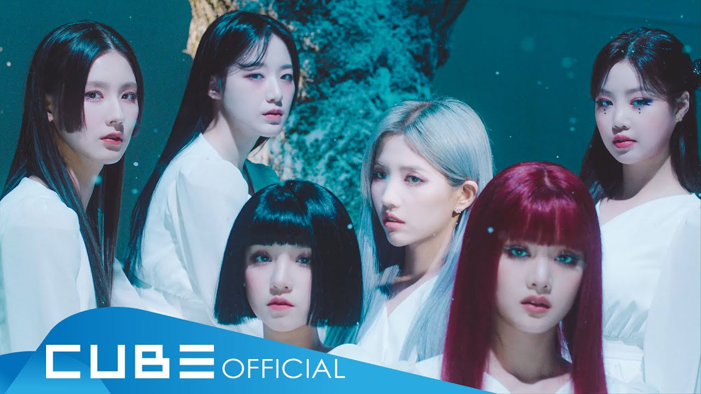

LATATAThe lead single 'LATATA' is a Moobahton trap track; a perfect match to show off (G)I-DLE's bold and powerful performance. The six members will turn into dancers who who would dance for their lovers. One notable fact about this upbeat track that it is written by group leader Jeon Soyeon and it has received the most views during the blind listening session. What makes the track more unique is the fact that it is very rare for a girl group to have their self-written song to become their own debut single. In addition, (G)I-DLE's modern uniqueness is represented through colours and art pieces in their music video; Ethnic artwork mix-matched with yellow and neon lights. |

한(一)(HANN(Alone))After their remarkable success within two months since their debut in May 2018, (G)I-DLE presents their new digital single '한(一)(HANN(Alone))'. The song 'HANN (Alone)' is based on Moombahton from house music genre showing connection with the previous song "LATATA". This song was written by Soyeon expressing betrayal, parting, and feeling of left by using the ambiguous word Han (Han has various meaning such as a number, one, or a combined feelings of sorrow, spite, rancor, regret, resentment, or grief). Soyeon, the leader of (G)I-DLE, had been recognized once again for her talent in composing and producing music and again, she now presents a new song, 'HANN'. |

Senorita"Senorita" is a lead single written by the leader of the group, Soyeon, just like their previous singles, "LATATA" and "HANN (Alone)". The chic song portrays a person confessing one's feelings very confidently to the person he/she fell in love with at first sight. The melody is even more addictive than their two previous singles, their ability to pull off a one-of-a-kind stage concept to create a perfect synergy. Moreover, their vocal and dance performances will please audiences' eyes and ears. |

Uh-Oh"Uh-Oh" is a common expression used in an embarrassing situation. In this song, the girls used this expression to diss people trying to
be a friend with them after their ignorance in their first meet.
|

LIONLION is a song recorded by (G)I-DLE, a South Korean girl group who participated in the reality girl group survival show Queendom.
It was released digitally on October 25, 2019. The song is the fifth song from the extended play Queendom Final Comeback.
|

Oh my godThe title track "Oh my god" started from having a theme of "self-trust." It is a urban hiphop track in which the stark differences in rhythm that correspond to the atmospheric changes within the song stand out. The fantasy-like mood and the bold sound led by a vintage piano sound and an 808bass are impressive. This track is something only (G)I-DLE can perform. |

i'M THE TRENDi'M THE TREND is the third digital single released by (G)I-DLE. it is also the pre-release single for their first single album DUMDi DUMDi.
This song was released on July 7, 2020 and was dedicated to their fanbase named Neverland.
|

DUMDi DUMDi'DUMDi DUMDi' is a tropical-based dance song with a moombahton rhythm that will make you feel (G)I-DLE's unique summer.
Leader Soyeon and Pop Time the composer worked together on this track to produce a (G)I-DLE summer song with an addictive melody
that accompanies the honest and straightforward lyrics with things that come to your mind when you think of summer and youth,
such as "heat", "chill", "passion", and "excitement".
|
|

HWAA(G)I-DLE's second breakup song 'HWAA' gives off the chilly and bitter cold winter vibe with its musical arrangements along with
Eastern instrument sounds to let the listeners to feel the aching pain from a breakup. In this moombahton track, the feelings after a
breakup are portrayed as 'HWAA' which has dual meanings of 'Fire' and 'Flower' with addictive hook and lyrics that show gradual change.
|

TOMBOY"TOMBOY" is the title track of (G)I-DLE's first full-length album, I NEVER DIE. It was released on March 14, 2022 with its music video. The title song 'TOMBOY' is a song that fully reveals (G)I-DLE's unique, confident attitude. Direct lyrics such as “I'm not a doll” and “Just me I-DLE” make the listener uncontrollable, creating a geeky character. |